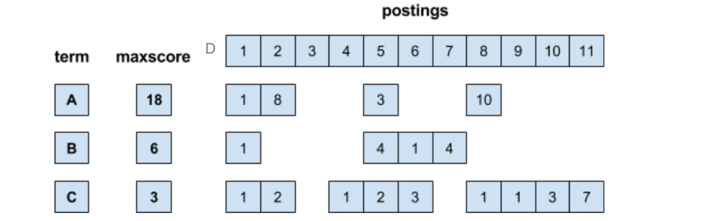

Abstract:
- Query prcoessing: TAAT/DAAT
- Optimization: MaxScore
TAAT
-
Term-at-a-time: Accumulates scores for documents by processing term lists one at a time
-
Each time we process term lists, we accumlate scores. If we use score array to accumlate, it need too much memory. So we use hash table to compute scores.
-
But still there are limited space for hash table, we can not store the score of every document. For example, we can only store the R documents. When R + 1 documnet comes, we need to pop the document with smallest score.
-
BUT how to guarantee the score is the smallest when accumlating?
We need to guarantee w1 makes the lagest contribution to the final score.
Score(Q,d) = w1 + w2 + … + wk, which w1 is the score generated by the first term we process. On the other word, we need to make sure w1 to wk is in decrease order.
Score = tf*idf. Since we can not control tf, we process the terms in idf decreasing order, which means we process the rawest term first.
-
DAAT
-
Document-at-a-time: Calculates complete scores for documents by processing all term lists, one document at a time
- [4:1] => [doc id : raw tf]
-
Similar to “MAX” algorithm
-
Advantage:
-
Memory efficient
-
Customize ranking function : we can generate holistic(整体) function (ranking function) to control the weight of certain terms.
-
E.g., “Hong Kong airport”.
we can use holistic function to ensure “Hong Kong” as a single word.
maybe use f(Q,d) = VectorModelScore(Q,d) + λ *I( d contains “Hong Kong”)
-
-
Optimization
MaxScore methods
-
Compute max term scores of each list and sort them in decreasing order (fixed during query processing)
-
Assume k =3, τʹ is lowest score of the current top-k documents
-
If MaxScoretree ≤ τ ʹ => any doc that scores higher than τ’ must contains at least one of the first two keywords. (The doc only contains “tree” will not update the current top2 score) => we can skip all the gray postings!
-
Advantage:
- Save Cpu time
- Save space
- can be used in DAAT and TAAT
-
Example:
Term MaxScore Top prime A 18 τ ʹ : undefind B 13 τ ʹ : 9 => ABCD C 12 τ ʹ : 11 => ABC (skip the doc only contains D) D 11 τ ʹ : 23 => AB (skip the doc only contains C and D)
-
Exercise:
(1) The BM25 formula essentially limits the impact of tf s (the value converges when tf → ∞). In our case, the scoring function is
score(d) ≤ 6f(tf1) + 2f(tf2) + f(tf3)
where f(x) = 3x/(2+x) . Since lim x→∞ f(x) = 3, we can find the maxscores for the terms are 18, 6, and 3.

(2) f(x) = 3x/(2+x)
- Step1: D1: score(D1) = 6f(1) + 2f(1) + f(1) = 9
- Step2: D2: score(D2) = 6f(8) + 2f(0) + f(2) = 15.90, current top2=(15.9, 9)
- Step3: we observe that maxscore of B + C ≤ 9，we only need to consider the docs contains A.
- Step4: D5: score(D5) = 6f(3) + 2f(4) + f(2) = 16.6. So, current top2 = (16.6, 15.9)
- Step5: Then we skip D6 and D7, we compute D8: score(D8) = 6f(10)+ f(1) = 16 . So, current top2 =(16.6,16)
- Finally: we skip D9-D11, we conclude that the final top-2 documents are D5 and D8.
How to find di s.t. sorce(di, Q) is likely to be high?
Conjunction method
-
Requires the result document containing all the query terms (i.e., conjunctive Boolean queries)
- result(di) = A ∩ B ∩ C ∩ D
-
Can be combined with both DAAT and TAAT
略 - -
Champion lists
-
Also called Fancy lists and Top docs
-
Precompute for each dictionary term t, the r docs of highest weight in t’s postings
- Note that r has to be chosen at index build time
-
At query time, only compute scores for docs in the champion list of some query term
- pick the top-k scoring docs among them
Threshold Methods
-
Threshold methods use number of top-ranked documents needed (k) to optimize query processing
-
For any query, there is a minimum score that each document needs to reach before it can be shown to the user
略 - -
Early termination
- Early termination of query processing. E.g., Query: ABCD => ABC
- ignore high-frequency word lists in term-at-a-time
- ignore documents at end of lists in doc-at-a-time
- unsafe optimization, do not guarantee the exact results